2024-06-17 21:08:53 · YinHao
LogicFlow 是一款流程图编辑框架，提供了一系列流程图交互、编辑所必需的功能和简单灵活的节点自定义、插件等拓展机制，方便我们快速在业务系统内满足类流程图的需求
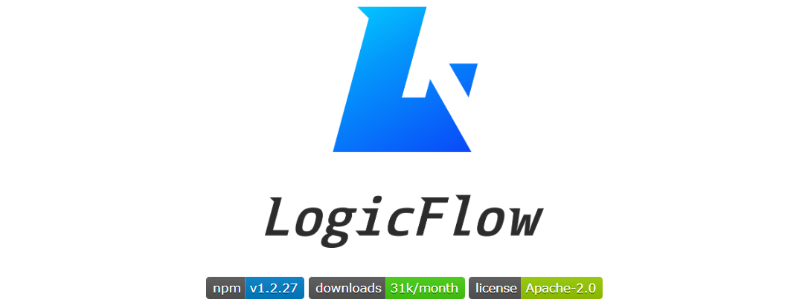兼容各种产品自定义的流程编辑需求，绝大部分模块以插件的形式实现，支持各模块自由插拔。
🚀 重执行 流程图能完备的表达业务逻辑，不受流程引擎限制。
🎯 专业 专注于业务流程图编辑的框架
NProgress 是一个使用起来很方便的进度条工具库
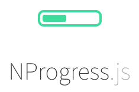一般在项目中使用它来展示页面加载的进度，或者路由跳转的进度~
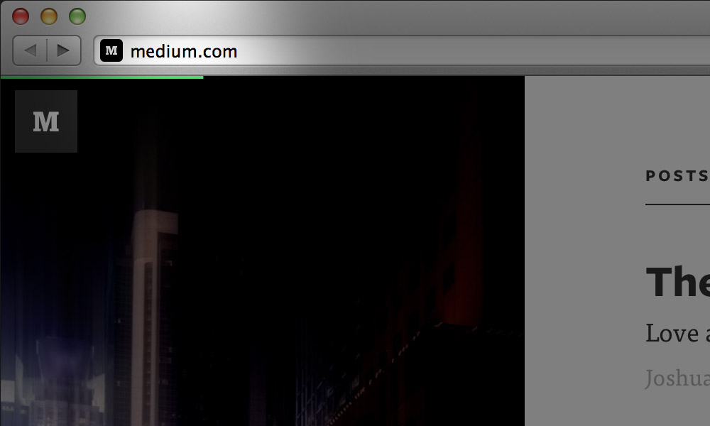 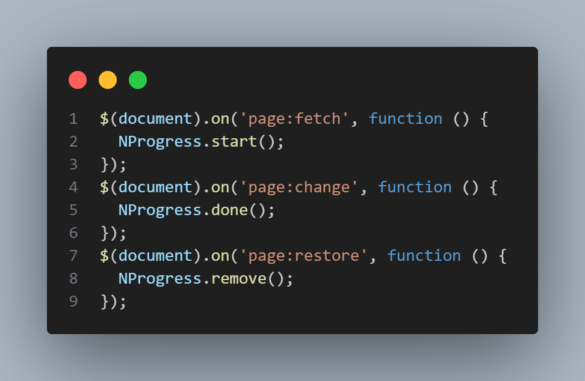tesseract.js 可以识别图片中的文字，并把这些文字转化成文本，返回给你
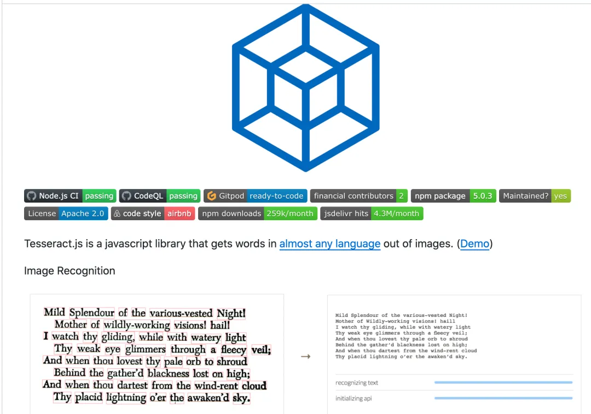在识别图片文字，根据搜索过滤图片等这些需求的时候，可以使用 tesseract.js 这个库~
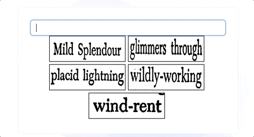 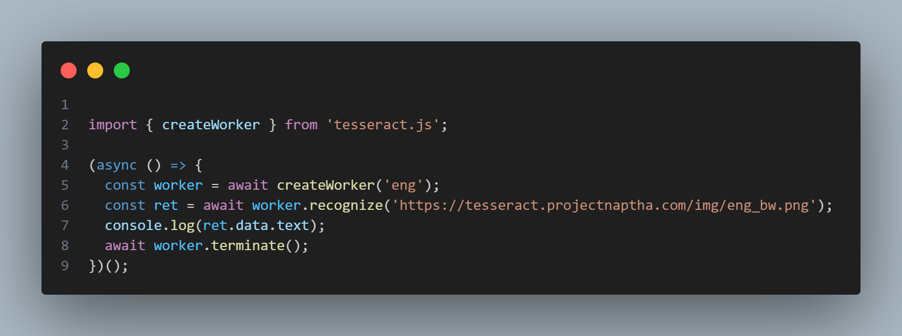平时在做注册功能的时候，我们可能得计算用户密码的密码强度，从而去提醒用户
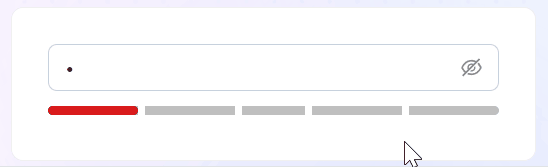@zxcvbn-ts/core 是 zxcvbn 密码强度估计器的 TypeScript 实现版本，用于帮助开发者评估用户设置密码的复杂度和安全性，计算的依据有：
dayjs 无疑是当今前端市场上时间工具库的大热门，使用方式跟 momentjs 类似，但是体积是 momentjs 的五分之一！！！格式化、时区设置、按需加载等功能，样样不少~
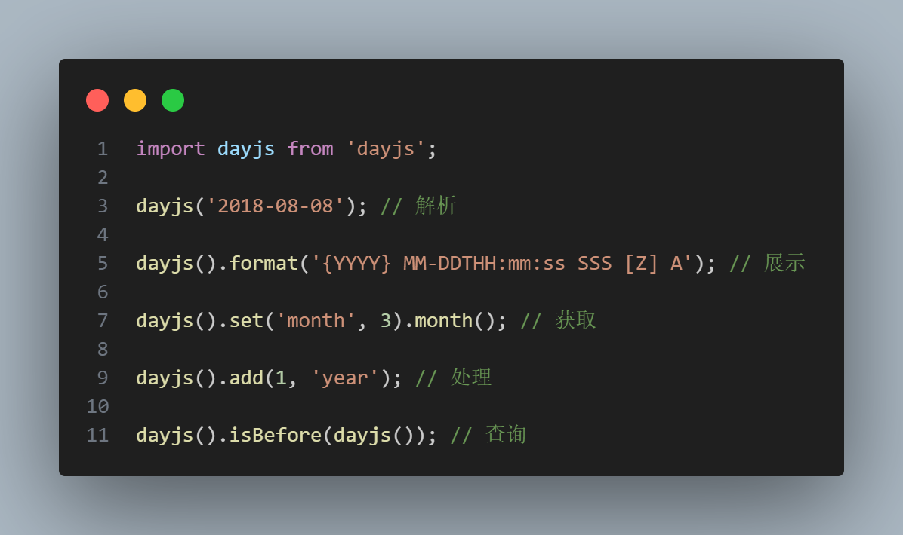qrcode 被用的最广泛的就是把一个 URL 转换为 一个二维码，可供给用户去扫码~
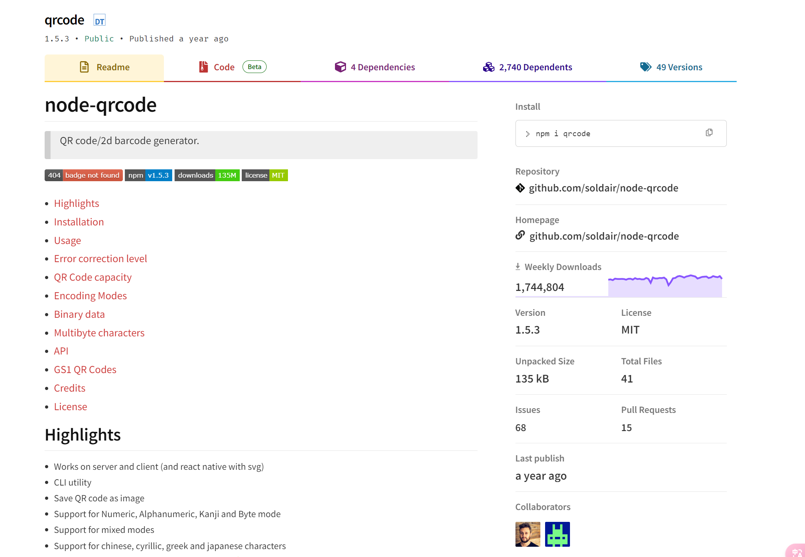 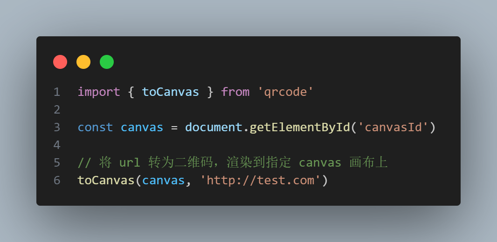前端加密工具库中当之无愧的王者！！！内置各种加密、解密算法！！！一般用来对密码、缓存等敏感信息进行加密、解密~
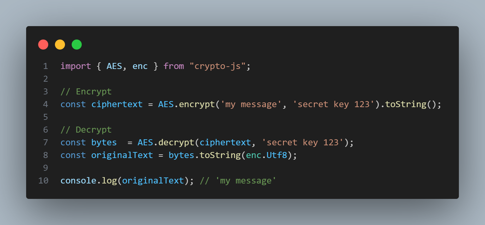sunshine-track 应用于前端监控，s 基于行为上报，实现了用户行为、错误监控、页面跳转、页面白屏检测、页面性能检测等上报功能。适用于 Vue、React、Angular 等框架
localforage 用于浏览器本地的缓存操作，并且它的操作都是异步的，这样做的好处是可以降低代码执行阻塞的风险
localforage 用起来非常方便，因为它提供了一系列的 API ，比如增加、修改、删除、查找等等
localforage 默认使用的存储方案是 IndexedDB，但是如果浏览器不兼容的话，会自动降级为 storage
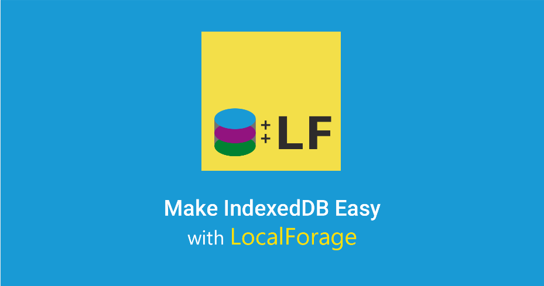 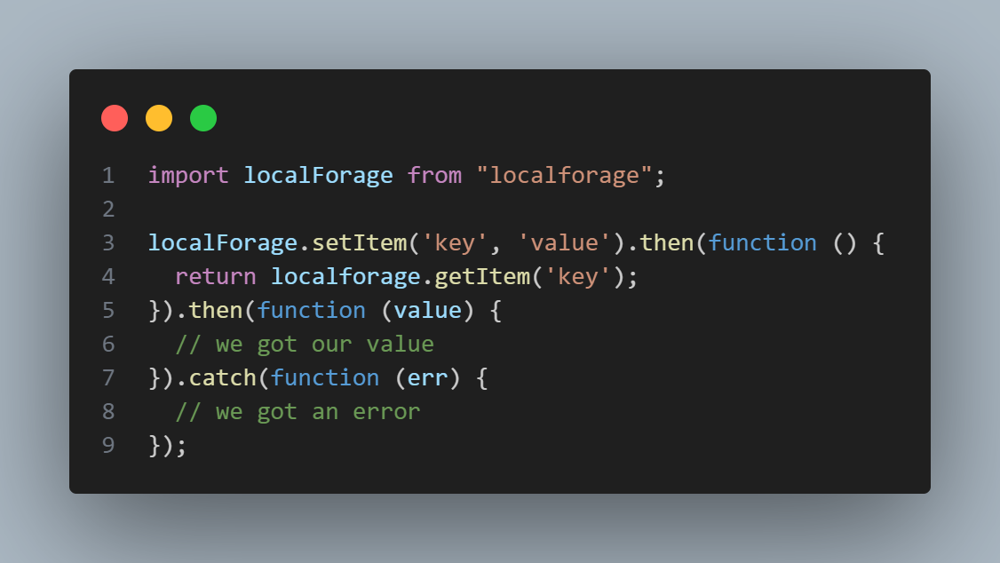以前的 lodash 版本不支持按需加载，这导致了打包后整个产物的体积很大，所以后来官方推出了 lodash-es
lodash-es 支持按需加载，这大大降低了打包的体积
以前使用 lodash 时
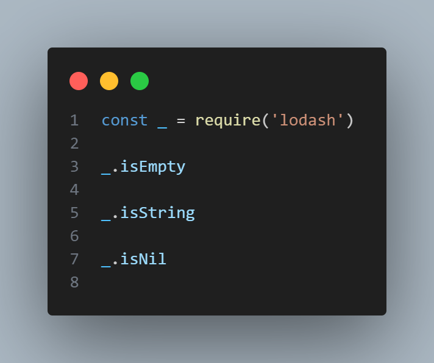现在使用 lodash-es 可以这么去用了~
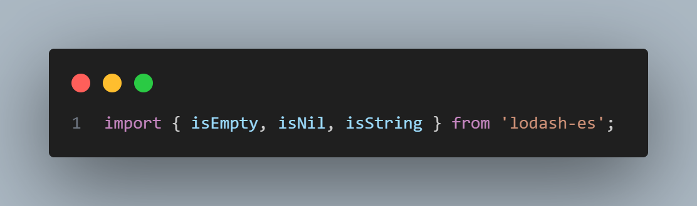